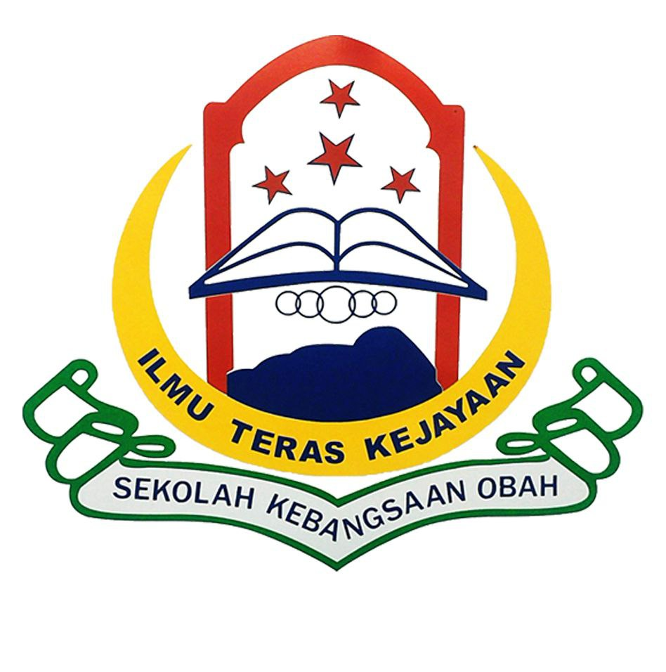
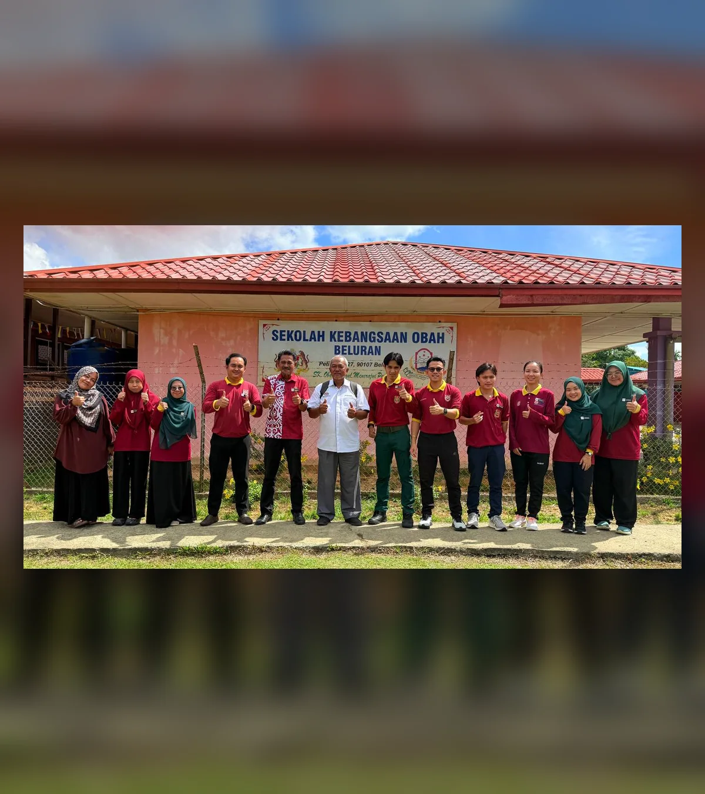
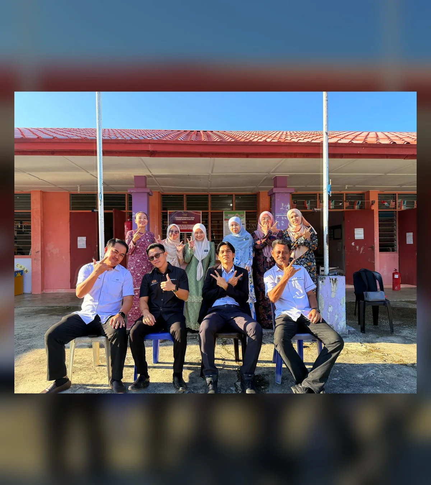
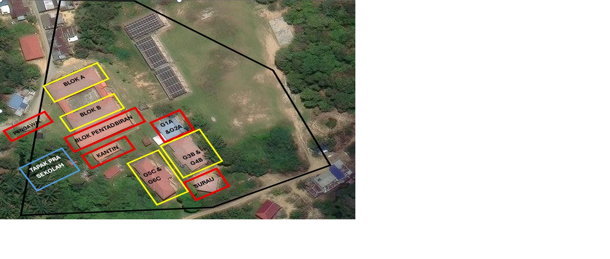

Utusan Guru Besar
Assalamualaikum dan Selamat Datang
Ahmad Bin SaidiGuru Besar SK Obah

Portal Digital SekolahBeluran, Sabah
Pusat maklumat rasmi yang menghubungkan warga sekolah, ibu bapa dan komuniti.
Pendidikan Berkualiti, Insan Terdidik, Negara Sejahtera


SK Obah Dalam Angka
Maklumat pencapaian sekolah akan dikemas kini.
Pilih bahagian untuk melihat program, makluman dan aktiviti yang diterbitkan.
Pautan utama untuk warga sekolah.
Makluman rasmi yang diterbitkan oleh pihak sekolah.
Pusat maklumat rasmi sekolah untuk warga SK Obah dan komuniti.
Sorotan program, pencapaian dan perkembangan SK Obah.
Tarikh penting dan program sekolah.
Aktiviti guru dipaparkan selepas kelulusan.
